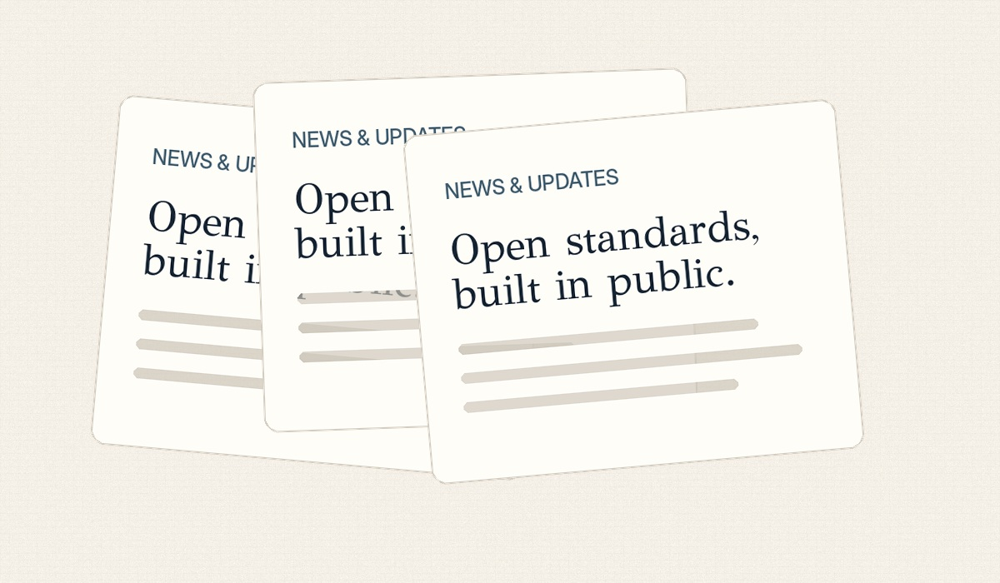

Introducing
Paper & Slate
An open foundation building the common infrastructure education software and schools have been missing.

Educational systems depend on information that is difficult to move, compare, discover, and preserve. The same basic concepts—schools, courses, standards, lessons, events, and public information—are represented differently by every platform.
Infrastructure should not belong to one vendor
Paper & Slate develops public specifications and reference tooling that anyone can implement. The goal is not to replace education software. It is to provide reliable common ground beneath it.
Starting in public
Every project begins as visible draft work. Repositories, RFCs, decisions, examples, and documentation are published from the outset so educators and implementers can influence the standards before they stabilize.
What comes next
The initial work covers a document file system, education discovery through a well-known location, organization schemas, course and standards representations, provenance, validators, and implementation libraries.